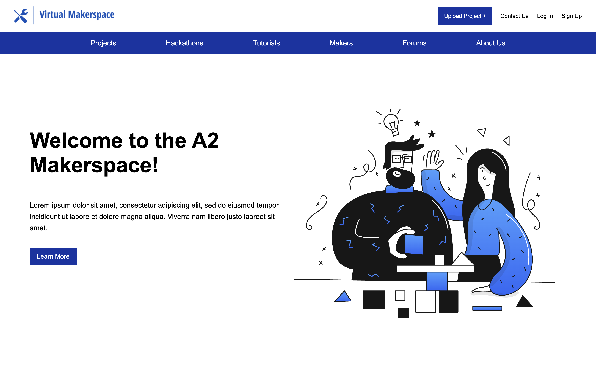
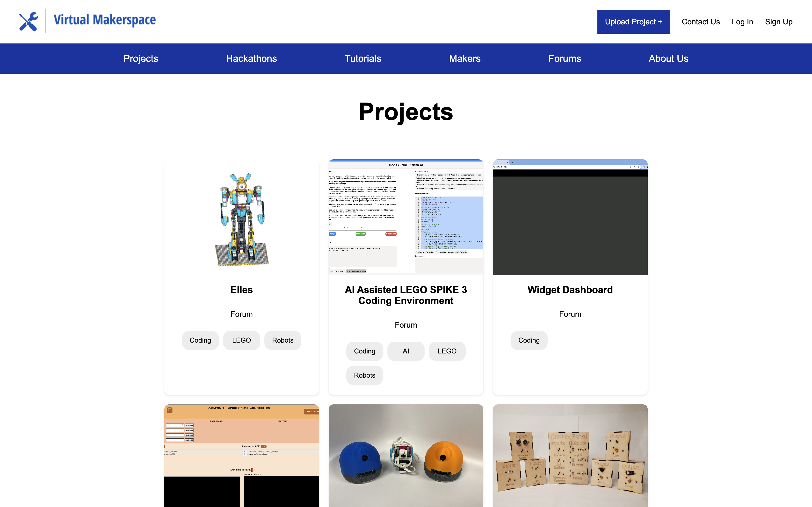
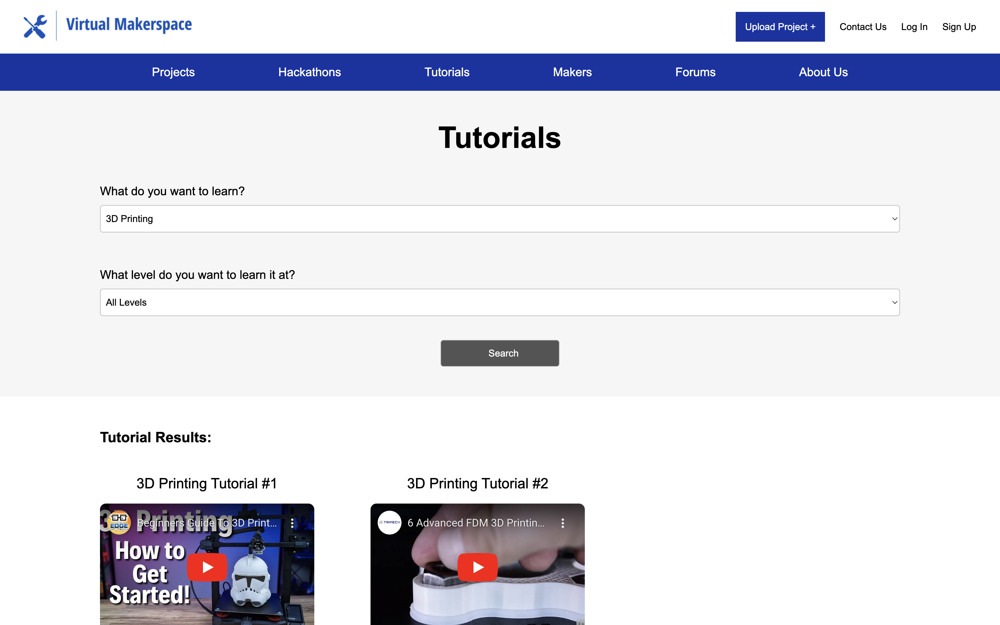

Hybrid Accessible Makerspace
Summer 2023

A2Makerspace
About A2Makerspace
During the summer of 2023, I worked as a website design researcher for
the Tufts Center for Engineering Education and Outreach. I worked
collaboratively with PhD student Kat Allen to design and implement a
WCAG 2 AAA compliant website to serve as a "digital makerspace" and
collaboration center for accessibility technology. The website is a
work in progress and has been taken over by a group of Tufts students
as a senior capstone project.
Concept
-
To develop a hybrid maker space community, focused on the needs of
people who encounter accessibility challenges in their day-to-day
lives. We believe that the best team to solve accessibility
problems is one where disabled people and others who needs access
are centered — not just as a client but as the primary designer
and builder of the system. This means providing accessible tools
and tutorials for interested people to learn how to create their
own solutions, or for them to team with others with complementary
skills
-
The center of the accessibility community will be a website, which
will include interviews with disabled makers who have created
adaptive tools for their own use, coupled with tutorials on the
techniques used to make them, so that beginner “makers” can patch
together the necessary techniques for their own projects
-
We are aiming for a WCAG AAA compliant website with English and
ASL captioning on all videos and English transcripts
Features
-
Upload projects and a space to share finished and unfinished
projects
- Host live hackathon sessions
- Video tutorials
- Forum for discussion
- Featured projects and interviews on front page
In adherence to the promise of inclusivity and accessibility, the
website required WCAG (Web content Accessibility Guidelines) 2 AAA
compliance, which represents the highest standard of web
accessibility. set by the World Wide Web Consortium. Achieving WCAG
AAA conformance indicates an exceptional commitment to inclusivity,
addressing intricate accessibility considerations beyond the basic and
intermediate levels. This includes sign language interpretation, image
readibility, and assisitve technology support among many other
requirements.
User Research
The user research was a comprehensive exploration into the diverse
needs and preferences of potential users. To gather insights,
interviews and surveys were conducted with a diverse group,
specifically including individuals with disabilities to ensure a
nuanced understanding of accessibility requirements. Participants were
able to share their experiences, challenges, and expectations related
to digital platforms, particularly in the context of accessibility.
The feedback gathered from users with varying abilities played a
pivotal role in shaping the design and functionality of the virtual
makerspace.
Simple Structure and Interface
-
Respondents highlighted the significance of simplicity in the
website's structure and user interface
- Prioritize a clean, intuitive layout
-
Easy navigation for users with different levels of digital
literacy and various assistive technologies
Content Presentation
- Particularly for users with cognitive disabilities
-
Preference for well-organized and easily digestible information
- Incorporate information hierarchy
-
Deilver information in a straightforward and comprehensible manner
Images and Videos
-
Particularly for users that are visually and hearing impaired
-
Images need to have descriptions that are able to be accessed with
screen readers
-
Videos need to have captions and ASL interpretations that are
easily accessible.
Navigability
- The site needs to be intuitively navigable
- Fully functional with keyboard-only navigation
- Clear and consistent navigation pathways
-
Minimize the number of keystrokes required to move between
sections or access specific features
Assistive Technology Compatibility
-
Integration with a variety of assistive tools, such as screen
readers, voice recognition software, and alternative input devices
Wireframes
Based on the proposed features and user research, I created some
initial wireframes of the site:
I also created initial mockups and prototypes of the site using Figma,
but I unfortunately do not have access to the Figma page anymore.
Website Features
- I kept the overall design of the website fairly simple
-
Facilitates accessibility and easier compliance with WCAG
guidelines
- Easily navigable and supports keyboard-only interaction
-
The headings on each page make it simple to identify the current
page
-
Each image on the site is able to be read by a screenreader via an
alt tag description
-
Each video on the site has corresponding links for the video's
transcript as well as the video with ASL captioning
-
I chose to use a relatively monochromatic color scheme both for
improved accessibility and to achieve better contrast
All Projects

Project Page

Project Page (cont.)

Tutorials Page

-
Search for video tutorials based on both topic and skill level
Upload Project

-
A description for each uploaded image can be entered into its
designated field
- Selecting an uploaded image will present a larger view below
Upload Project (cont.)

-
Users can upload a video of the project, along with that video with
ASL captioning
-
Entering a YouTube video link into the field will showcase it below